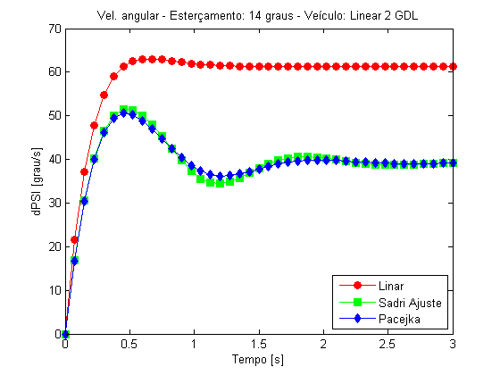
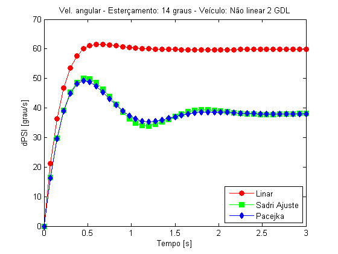
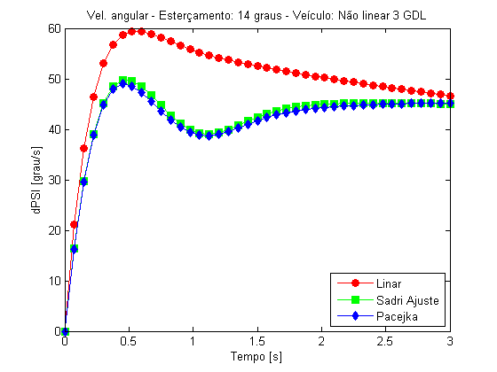
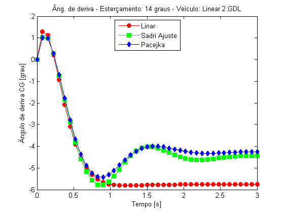
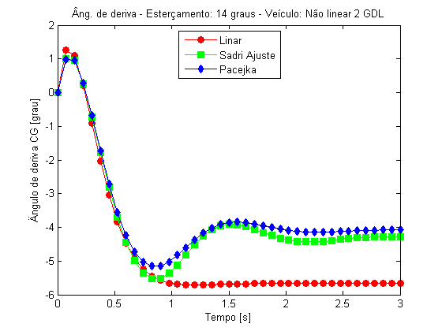
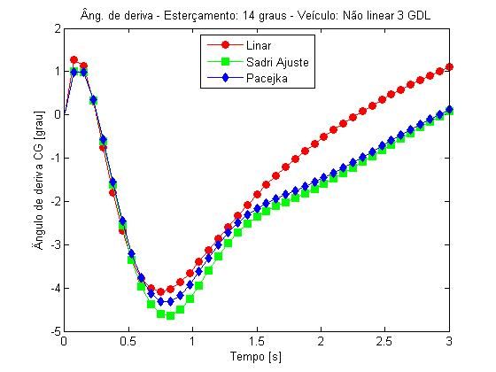
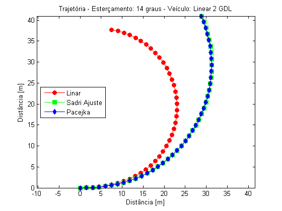
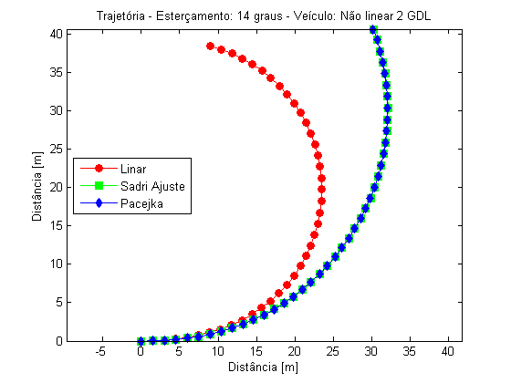
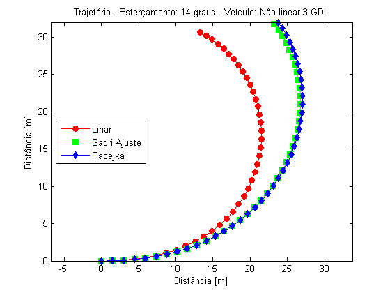

Estudo comparação - DELTA = 14 graus
Este script mostra o desempenho dos veículos para um ângulo de esterçamento de 14 graus e condições iniciais nulas.
Contents
Objetivo
O objetivo deste estudo é ...
Opções:
Ver as opções de modelos e dados em Início.
Modelos de veículos
Os modelos de veículos que serão usados nas simulações:
% Modelos veiculoModeloVet = [1 2 3]; % Vai ser o número de figuras % Onde: % 1 = veiculoLinear2gdl (Linear com 2 GDL) % 2 = veiculoNaoLinear2gdl (Não linear com 2 GDL) % 3 = veiculoNaoLinear3gdl (Não linear com 3 GDL) % Vetor com texto para a descrição dos gráficos veiculoModeloTxt = char(' Linear 2 GDL',' Não linear 2 GDL',' Não linear 3 GDL'); % Dados veiculoDados = 2; % Não ocorre variação dos dados do veículo % Onde: % 1 = veiculoDadosDelta0 % 2 = veiculoDadosDelta14 % 3 = veiculoDadosDelta45
Modelos de pneu
Os modelos de pneu que serão usados nas simulações:
pneuModeloVet = [1 2 3]; % Vai ser o número de curvas em cada figura % Onde: % 1 = pneuLinearFun (Pneu linear) % 2 = pneuSadriFun (Pneu Sadri) % 3 = pneuPacejkaFun (Pneu Pacejka) % 4 = pneuPacejkaEstFun (Pneu Pacejka Estendido) pneuModeloTxt = char('Linar','Sadri Ajuste','Pacejka'); pneuModeloCor = char('r','g','b'); pneuModeloMarcador = char('o','s','d'); pneuDadosVet = [1 3 4]; % Onde: % 1 = pneuLinearDados (Dados para pneu linear) % 2 = pneuSadriDadosTaylor (Dados para pneu Sadri) % 3 = pneuSadriDadosAjuste (Dados para pneu Sadri) % 4 = pneuPacejkaDados (Dados para pneu Pacejka)
Dados básicos da integração
T = 3; % Tempo total de simulação res = 40; % Resolução TSPAN = 0:T/res:T; % Vetor de tempo de análise % Pre alocando x0 x0 = [0;0;0;0;0;0]; % Pre alocando dPSI e ALPHAT dPSI = zeros(res + 1,3); ALPHAT = zeros(res + 1,3); % Pre alocando X e Y X = zeros(res + 1,3); Y = zeros(res + 1,3);
Loop
for i = 1:length(veiculoModeloVet)
for j = 1:length(pneuModeloVet) veiculoModelo = veiculoModeloVet(i); % Modelo de veículo da iteração i % Modelo e dados de pneu pneuModelo = pneuModeloVet(j); pneuDados = pneuDadosVet(j); [pneuFun,veiculoFun,pneuDadosFrente,pneuDadosTras,veiculoDadosVet,pneuTxt,veiculoTxt] ... = seletor(pneuModelo,pneuDados,veiculoModelo,veiculoDados); % Módulo do vetor velocidade. Quando o modelo tem 2gdl é a velocidade % prescrita. Quando o modelo tem 3gdl é a condição inicial. v = veiculoDadosVet(5); % Condições iniciais r0 = 0; % velocidade angular [rad/s] ALPHAT0 = 0; % ângulo de deriva do centro de massa [rad] x0(1:2,1) = [r0 ; ALPHAT0]; % Condição inicial dos estados x0(3,1) = 0; % Condição da orientacao x0(4:5,1) = [0 ; 0]; % Condição inicial da trajetória % Para que o integrador consiga rodar no modelo com 3 gdl é necessário acrescentar uma % condição inicial referente ao estado velocidade "v". % Ou seja, a velocidade que era prescrita antes agora é condição inicial x0(6,1) = v; % Condição inicial da velocidade if veiculoModelo == 3 X0 = x0; % Condição inicial da velocidade else X0 = x0(1:5,1); end % Integrando [TOUT,XOUT] = ode45(@(t,x) veiculoFun(t,x,pneuFun,pneuDadosFrente,pneuDadosTras,veiculoDadosVet),TSPAN,X0); % Obtendo as saídas do integrador para cada variação de pneu % utiliza-se "size" pois se a integração abortar XOUT vai ter um % tamanho menor que a pré alocação dos vetores. dPSI(1:size(XOUT,1),j) = XOUT(:,1); ALPHAT(1:size(XOUT,1),j) = XOUT(:,2); X(1:size(XOUT,1),j) = XOUT(:,4); Y(1:size(XOUT,1),j) = XOUT(:,5); end
Velocidade angular
Comparando a velocidade ângular:
figure(i) hold on box on H = plot(TOUT,dPSI*180/pi); set(H(1),'Color',pneuModeloCor(1),'Marker',pneuModeloMarcador(1),'MarkerFaceColor',pneuModeloCor(1),'MarkerSize',7) set(H(2),'Color',pneuModeloCor(2),'Marker',pneuModeloMarcador(2),'MarkerFaceColor',pneuModeloCor(2),'MarkerSize',7) set(H(3),'Color',pneuModeloCor(3),'Marker',pneuModeloMarcador(3),'MarkerFaceColor',pneuModeloCor(3),'MarkerSize',7) title('Velocidade angular X Tempo') title(strcat('Vel. angular - Esterçamento: 14 graus - Veículo: ',veiculoModeloTxt(i,:))); ylabel('dPSI [grau/s]') xlabel('Tempo [s]') legend(pneuModeloTxt(1,:),pneuModeloTxt(2,:),pneuModeloTxt(3,:),'Location','SouthEast')  
Ângulo de deriva do centro de massa
Comparando o ângulo de deriva do centro de massa:
figure(i + 3) hold on box on H = plot(TOUT,ALPHAT*180/pi); set(H(1),'Color',pneuModeloCor(1),'Marker',pneuModeloMarcador(1),'MarkerFaceColor',pneuModeloCor(1),'MarkerSize',7) set(H(2),'Color',pneuModeloCor(2),'Marker',pneuModeloMarcador(2),'MarkerFaceColor',pneuModeloCor(2),'MarkerSize',7) set(H(3),'Color',pneuModeloCor(3),'Marker',pneuModeloMarcador(3),'MarkerFaceColor',pneuModeloCor(3),'MarkerSize',7) title('Ângulo de deriva CG X Tempo') title(strcat('Âng. de deriva - Esterçamento: 14 graus - Veículo: ',veiculoModeloTxt(i,:))); ylabel('Ângulo de deriva CG [grau]') xlabel('Tempo [s]') legend(pneuModeloTxt(1,:),pneuModeloTxt(2,:),pneuModeloTxt(3,:),'Location','North')  
Trajetória
Comparando a trajetória do veículo:
figure(i + 6); hold on box on axis equal H = plot(X,Y); set(H(1),'Color',pneuModeloCor(1),'Marker',pneuModeloMarcador(1),'MarkerFaceColor',pneuModeloCor(1),'MarkerSize',7) set(H(2),'Color',pneuModeloCor(2),'Marker',pneuModeloMarcador(2),'MarkerFaceColor',pneuModeloCor(2),'MarkerSize',7) set(H(3),'Color',pneuModeloCor(3),'Marker',pneuModeloMarcador(3),'MarkerFaceColor',pneuModeloCor(3),'MarkerSize',7) title(strcat('Trajetória - Esterçamento: 14 graus - Veículo: ',veiculoModeloTxt(i,:))); ylabel('Distância [m]') xlabel('Distância [m]') legend(pneuModeloTxt(1,:),pneuModeloTxt(2,:),pneuModeloTxt(3,:),'Location','West')  
end
Análise
O modelo linear de pneu apresenta grandes desvios com relação aos outros dois modelos. Como discutido em Modelos de pneu, as hipóteses sobre o modelo linear são mais restritivas e menos representativas da realidade. Portanto, sua aplicação é claramente limitada em situações como as observadas neste estudo.
Os modelos Sadri Ajuste e Pacejka apresentam excelente concordância. Este fato se deve ao fato das curvas características serem muito semelhantes para ângulos de deriva abaixo de 90 graus.